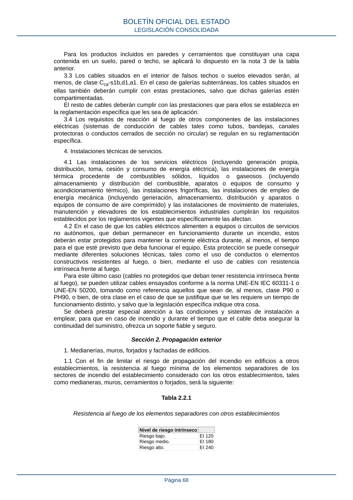

RSCIEI · Fragmento de PDF p65 · versión 2025-04-10 · capa asociada
Formatos: JSON compacto · Markdown · PDF fuente
Ámbito del documento · texto del ámbito · documento y tablas
ID técnico a0130 · PDF pág. 65-68 · jerarquía no validada por persona · no es capítulo: sin_linea_de_encabezado · padre: raíz · literal original en el contenido: «disposición u otros motivos), dicha separación es suficiente para evitar la propagación.»
disposición u otros motivos), dicha separación es suficiente para evitar la propagación. En el caso de existencia de puertas en la fachada que requieran de resistencia al fuego, pueden aplicarse las mismas consideraciones que en la nota 3 de la tabla 2.1.2. c) En el caso de espacios abiertos con zonas con muelles de carga, estacionamientos de vehículos, pequeños porches, movimientos habituales de materiales en tránsito situados a la salida de un edificio, así como otras actividades similares, si no fuera posible realizar la separación señalada en los epígrafes anteriores respecto a los edificios del establecimiento industrial considerado, se tomarán acciones para considerar el posible riesgo que puedan generar dichas actividades, debiendo en este caso las bocas de incendio equipadas, hidrantes o extintores que puedan ser requeridos según el anexo III (en el interior o exterior de los edificios), estar situados de forma que puedan actuar en caso de incendio en estas zonas. 1.6 En las áreas de incendio en espacios abiertos (configuración tipo D), la distribución de los materiales combustibles deberá cumplir los siguientes requisitos: BOLETÍN OFICIAL DEL ESTADO LEGISLACIÓN CONSOLIDADA Página 65 a) Para materiales sólidos, o bien materiales envasados, que se encuentren almacenados por medio de un apilamiento unos sobre otros (o agrupados, amontonados, a granel o de otra forma equivalente): i. Superficie máxima de cada pila: 500 m2. ii. Volumen máximo de cada pila: 3.500 m3. iii. Altura máxima de cada pila: 15 metros. iv. Longitud máxima de cada pila: 20 metros. Si la anchura del pasillo entre pilas es mayor o igual a 2,5 metros, la longitud máxima será de 45 metros. v. Separación mínima entre pilas: 1,5 metros. vi. Cada 65 metros de almacenamiento se deberá disponer de una separación entre pilas de, al menos, 5 metros de anchura. En el caso de que la altura de la pila sea mayor de 5 metros, dicha separación deberá ampliarse a la misma distancia que dicha altura. b) En otros casos distintos, los materiales se deberán colocar asegurando que se limite la propagación del incendio y se facilite la extinción, de forma que se consiga un resultado equivalente a lo previsto en la letra a). Esta particularidad deberá estar justificada. 2. Espacios ocultos. Paso de instalaciones a través de elementos de compartimentación de incendios. 2.1 La compartimentación contra incendios de los sectores debe tener continuidad en los espacios ocultos, tales como patinillos, cámaras, falsos techos, suelos elevados o galerías subterráneas (canalizaciones o conductos) de todo tipo de instalaciones, entre otros, salvo cuando éstos estén compartimentados respecto de los primeros al menos con la misma resistencia al fuego, pudiendo reducirse ésta a la mitad en los registros para mantenimiento y en los sellados de orificios de paso de canalizaciones de líquidos no inflamables ni combustibles. 2.2 La resistencia al fuego requerida a los elementos de compartimentación de incendios se debe mantener en los puntos en los que dichos elementos son atravesados por elementos de las instalaciones, tales como cables, tuberías, conducciones o conductos de ventilación, entre otros, excluidas las penetraciones cuya sección de paso no exceda de 50 cm². Para ello puede optarse por una de las siguientes alternativas: a) Disponer un elemento que, en caso de incendio, obture automáticamente la sección de paso y garantice en dicho punto una resistencia al fuego al menos igual a la del elemento atravesado, tal como una compuerta cortafuegos automática EI t (i↔o) siendo t el tiempo de resistencia al fuego requerida al elemento de compartimentación atravesado, o bien, un dispositivo intumescente de obturación, como por ejemplo, en caso de tuberías que atraviesen un sector de incendios y que estén hechas de material combustible o fusible, en donde el sistema de sellado debe asegurar que el espacio interno que deja la tubería al fundirse o arder también queda sellado. b) Elementos pasantes que aporten una resistencia al menos igual a la del elemento atravesado. Por ejemplo, conductos de ventilación EI t (i↔o) siendo t el tiempo de resistencia al fuego requerida al elemento de compartimentación atravesado. De este modo, los sistemas que incluyen conductos, tanto verticales como horizontales, que atraviesen elementos de compartimentación y cuya función no permita el uso de compuertas (extracción de humos, ventilación de vías de evacuación, entre otros), deben ser resistentes al fuego o estar adecuadamente protegidos en todo su recorrido con el mismo grado de resistencia al fuego que los elementos atravesados. En el caso de patinillos, estos se pueden considerar como suficientemente estancos (y por tanto a cuyas bajantes no les sería exigible la clasificación de reacción al fuego) si estos están delimitados por un cerramiento que, al menos, tenga la resistencia al fuego exigida a los elementos (sectores) que atraviesa, incluso en los puntos en los que dicho cerramiento es atravesado por instalaciones cuya sección de paso exceda de 50 cm2, y cuyos registros, caso de existir, tengan al menos el 50 % de dicha resistencia al fuego. Respecto a los registros resistentes al fuego que puedan existir en patinillos o conductos de instalaciones, no es obligatorio que estos dispongan de un sistema de cierre automático, dado que estos deben permanecer siempre cerrados y su uso se limita únicamente a tareas de mantenimiento. BOLETÍN OFICIAL DEL ESTADO LEGISLACIÓN CONSOLIDADA Página 66 3. Reacción al fuego de los de los elementos constructivos. 3.1 Los productos utilizados como revestimiento o acabado superficial deben tener, como mínimo, las siguientes prestaciones: Tabla 2.1.4 Clases de reacción al fuego de los elementos constructivos Situación del elemento Revestimientos (1) De techos y paredes (2) (3) (7) De suelos (2) Zonas ocupables, en general (4). C-s2,d0 CFL-s1 Pasillos y escaleras protegidos. B-s1,d0 CFL-s1 Aparcamientos y sectores de nivel de riesgo intrínseco alto (5). B-s1,d0 BFL-s1 Espacios ocultos no estancos, tales como patinillos, falsos techos y suelos elevados, entre otros, o que siendo estancos, contengan instalaciones susceptibles de iniciar o de propagar un incendio. B-s3,d0 BFL-s2 (6) Notas de la tabla: Nota 1: Siempre que superen el 5 % de las superficies totales del conjunto de las paredes, del conjunto de los techos o del conjunto de los suelos del recinto considerado. Nota 2: Incluye las tuberías y conductos que transcurren por las zonas que se indican sin recubrimiento resistente al fuego. Cuando se trate de tuberías con aislamiento térmico lineal, la clase de reacción al fuego será la que se indica, pero incorporando el subíndice L. Nota 3: Incluye a aquellos materiales que constituyan una capa contenida en el interior del techo o pared y que no esté protegida por una capa que sea EI 30 como mínimo. (Esto aplica a los elementos multicapa que se conforman en la propia obra superponiendo un material, o capa, a otro. Para el caso de los productos de construcción multicapa que se ensayan y fabrican como tales, también les aplica el mismo requisito, con la consideración de que dichos productos ya disponen de la clasificación de su reacción al fuego como producto integrado, por lo que será esta clasificación la que hay que tener en cuenta). Nota 4: Incluye, tanto las de permanencia de personas, como las de circulación que no sean protegidas. Nota 5: Notar que el artículo 4 del reglamento, «Compatibilidad reglamentaria», dispone que, para aparcamientos, a partir de una cierta superficie se aplicarán los requisitos técnicos del CTE DB-SI. Nota 6: Se refiere a la parte inferior de la cavidad. Por ejemplo, en la cámara de los falsos techos se refiere al material situado en la cara superior de la membrana. En espacios con clara configuración vertical (por ejemplo, patinillos) así como cuando el falso techo esté constituido por una celosía, retícula o entramado abierto, con una función acústica o decorativa, o similar, esta condición no es aplicable. Nota 7: A los lucernarios en general y a los aireadores de extracción natural de humo y calor que se instalen en las cubiertas, se les aplicarán los mismos requisitos que a los techos y paredes. No obstante, los lucernarios de grandes dimensiones en cubierta serán siempre de clase B-s1,d0 o más favorable. A los efectos de lo dispuesto aquí, se entenderán como lucernarios a aquellos elementos aislados o integrados en la cubierta, formados por materiales transparentes o traslúcidos que permiten la entrada de luz en el edificio. Se considerarán lucernarios de grandes dimensiones a aquellos lucernarios que tengan más de 10 metros de longitud, o bien, cuando haya varios lucernarios agrupados que tengan una separación entre ellos inferior a 2 metros y ocupen más de 10 metros de longitud. 3.2 Los productos situados en el interior de falsos techos o suelos elevados, tanto los utilizados para aislamiento térmico y para acondicionamiento acústico como los que constituyan o revistan conductos de aire acondicionado o de ventilación, o similar, deben ser de clase B-s3,d0 o más favorable. BOLETÍN OFICIAL DEL ESTADO LEGISLACIÓN CONSOLIDADA Página 67 Para los productos incluidos en paredes y cerramientos que constituyan una capa contenida en un suelo, pared o techo, se aplicará lo dispuesto en la nota 3 de la tabla anterior. 3.3 Los cables situados en el interior de falsos techos o suelos elevados serán, al menos, de clase Cca-s1b,d1,a1. En el caso de galerías subterráneas, los cables situados en ellas también deberán cumplir con estas prestaciones, salvo que dichas galerías estén compartimentadas. El resto de cables deberán cumplir con las prestaciones que para ellos se establezca en la reglamentación específica que les sea de aplicación. 3.4 Los requisitos de reacción al fuego de otros componentes de las instalaciones eléctricas (sistemas de conducción de cables tales como tubos, bandejas, canales protectoras o conductos cerrados de sección no circular) se regulan en su reglamentación específica. 4. Instalaciones técnicas de servicios. 4.1 Las instalaciones de los servicios eléctricos (incluyendo generación propia, distribución, toma, cesión y consumo de energía eléctrica), las instalaciones de energía térmica procedente de combustibles sólidos, líquidos o gaseosos (incluyendo almacenamiento y distribución del combustible, aparatos o equipos de consumo y acondicionamiento térmico), las instalaciones frigoríficas, las instalaciones de empleo de energía mecánica (incluyendo generación, almacenamiento, distribución y aparatos o equipos de consumo de aire comprimido) y las instalaciones de movimiento de materiales, manutención y elevadores de los establecimientos industriales cumplirán los requisitos establecidos por los reglamentos vigentes que específicamente las afectan. 4.2 En el caso de que los cables eléctricos alimenten a equipos o circuitos de servicios no autónomos, que deban permanecer en funcionamiento durante un incendio, estos deberán estar protegidos para mantener la corriente eléctrica durante, al menos, el tiempo para el que esté previsto que deba funcionar el equipo. Esta protección se puede conseguir mediante diferentes soluciones técnicas, tales como el uso de conductos o elementos constructivos resistentes al fuego, o bien, mediante el uso de cables con resistencia intrínseca frente al fuego. Para este último caso (cables no protegidos que deban tener resistencia intrínseca frente al fuego), se pueden utilizar cables ensayados conforme a la norma UNE-EN IEC 60331-1 o UNE-EN 50200, tomando como referencia aquellos que sean de, al menos, clase P90 o PH90, o bien, de otra clase en el caso de que se justifique que se les requiere un tiempo de funcionamiento distinto, y salvo que la legislación específica indique otra cosa. Se deberá prestar especial atención a las condiciones y sistemas de instalación a emplear, para que en caso de incendio y durante el tiempo que el cable deba asegurar la continuidad del suministro, ofrezca un soporte fiable y seguro.


PDF fuente redistribuible: copia fiel enlazada en esta página (SHA256 verificado).